Seven Signs Parte 1
Quest Seven Signs (Parte 1)
Requerimiento: Nivel 79+
Npc de inicio: Croop
Reward: Belt + AA + XP/SP
*La cantidad de exp y sp depende de los rates del server
1 - Seven Signs, Series of Doubt
La quest se inicia en el warehouse de Oren (Croop) donde instantáneamente nos mostrará una animación.
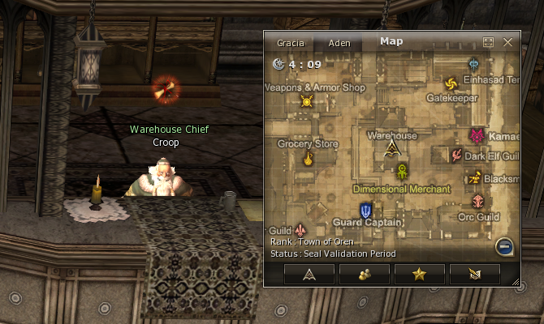
Después de la animación hablamos con él nuevamente y nos enviara a hablar con el guardia Hector en la salida Norte de Oren.
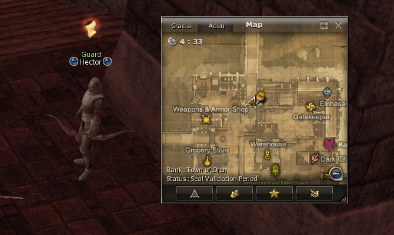
Nos enviará a hablar con el guardia Stan en la salida Sur de Oren.
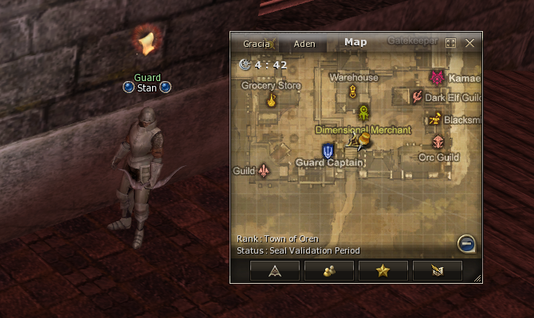
Él nos enviará a investigar algo raro que vio en el lado este del castillo de Oren (Parte de atrás), ahí encontraremos un cadáver y tendremos que ir a hablar de nuevo con Croop al warehouse de Oren.
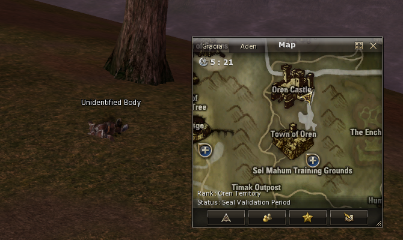
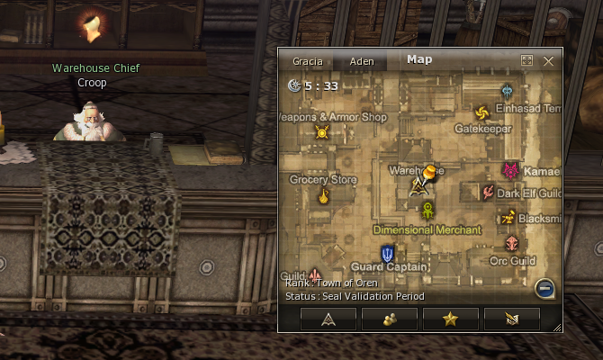
Croop nos enviará a hablar con el High Priest Hollint en la iglesia de Oren.
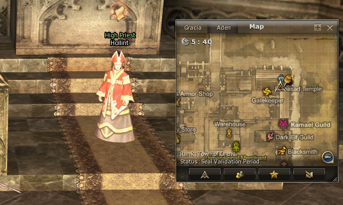
Aquí terminamos la primera parte, nos recompensará con experiencia. Para continuar la quest, hablamos de nuevo con Hollint.
2 - Seven Signs, Dying Message
La primera tarea que nos dará Hollint es ir a hablar con el Priest Cain, que se encuentra saliendo por la puerta norte de Oren y tirándonos por la derecha.
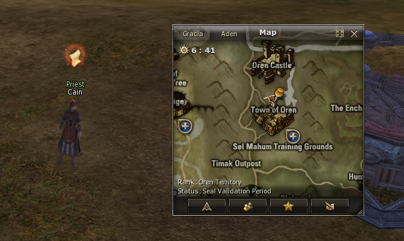
Cain nos enviará a hablar con Eric, que se encuentra al sur de Enchanted Valley (GK Hunter Village > Enchanted Valley, Southern Region).
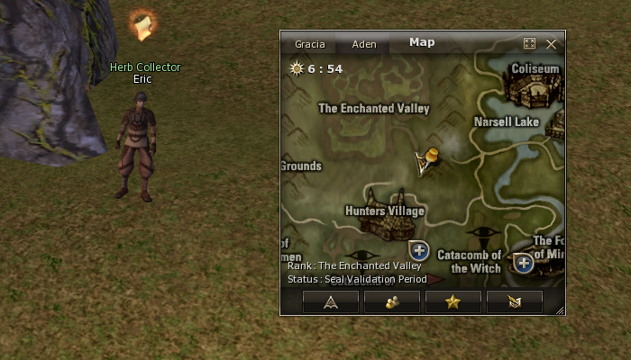
Él nos dará unas hierbas y tendremos que volver con Cain.
⚠️Cuando estemos con Cain, despues de seleccionar esta opción 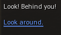 aparecerá un Npc y nos pegará, no es muy difícil, pero ten en cuenta que es una quest de lvl 79+, si estas con grado D seguramente te mate y tendrás que volver a hablar con Cain.
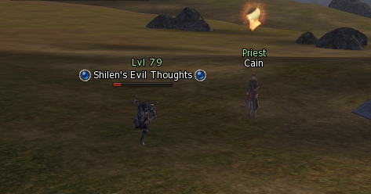
Después de matarlo, Cain y el npc muerto dirán un diálogo y ahí podrás confirmar que se cumplió el objetivo, si por casualidad pasó algo que no te deja continuar, habla con Cain y aparecerá otro npc.
Una vez completada esta parte, nos enviará a hablar con Sir Gustav Athebaldt, que se encuentra al sur de Oren al lado de la warrior guild.
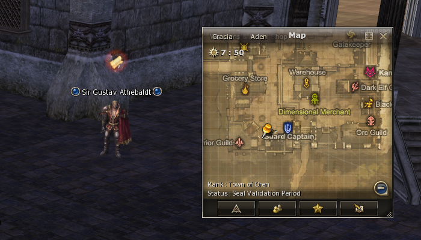
Aquí terminamos la segunda parte, nos recompensará con experiencia. Para continuar la quest, hablamos de nuevo con Sir Gustav.
3 - Seven Signs, Mammon's Contract
Pedimos la siguiente quest. Acá en teoría hay otra animación, pero en el server que me tocó hacer la guia no la tenía, así que hablamos nuevamente con Sir Gustav que nos enviara con Colin en Aden.
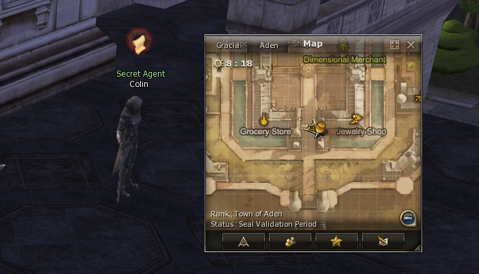
⚠️En esta parte nos vamos a transformar en un Sapo, un niño/a y un Adulto/a, tendremos que ir a puntos específicos del mapa corriendo, así que antes de iniciar esto te dejo unos consejos para acelerar el viaje, ya que es una de las partes que más tiempo toma.
- Vamos a perder WW, así que no te gastes en intentar trucos nuevos, si el server funciona todo bien, no tienes manera de aumentar la speed de manera externa.
- ¡Podemos summonearnos! podemos dejar un summon (Elemental summoner, phantom summoner, warlock) en el primer punto, mientras volvemos a aden para cambiar de forma, el summoner va al segundo punto y nos vamos a ahorrar un buen tiempo en viaje.
- Cuando logramos ir objetivo y nos envíe a aden, es recomendable buscar agua lo más cerca posible para destransformarse, al entrar en contacto con el agua, se perderá la tranfo (En caso que te ocurra en el viaje de perder la tranfo en el agua, tendrás que volver a aden para que te transforme de nuevo).
- Si tienes hall en aden, pueden teletransportarse directamente, el NPC del hall es el único que te responde cuando estás transformado, así que puedes viajar a Forest of Mirror y volver por soe de Hall.
Una vez que hablemos con Colin nos transformaremos en sapo y tendremos que ir al primer objetivo, el Rey Sapo. No distraerse que nos da el tiempo justo para ir al punto.
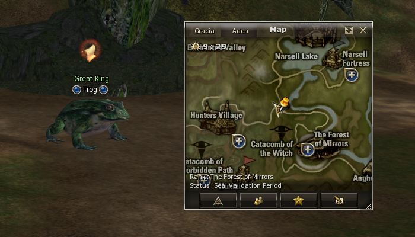
Hablamos con el Great King Frog y volvemos a aden a hablar con Colin que nos transformará en un Niño/a. Nos enviará a hablar con la abuela Tess, hablamos con ella y volvemos a aden.
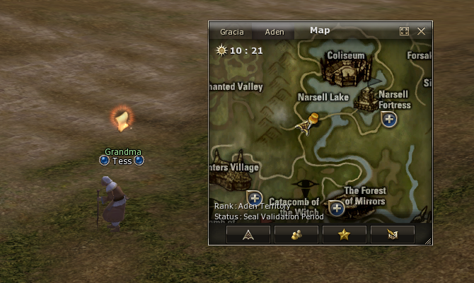
Ahora nos transformará en un Npc adulto/a y tendremos que ir al Coliseum a hablar con Kuta.
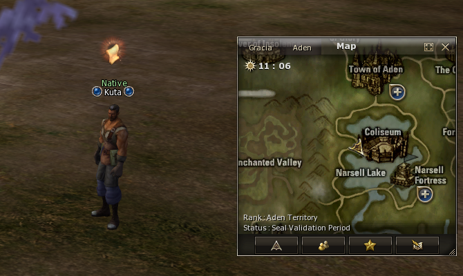
Volvemos a aden a hablar con Colin, él nos enviará a hablar con Claudia Athebaldt al norte de Aden, saliendo por la puerta a la derecha.
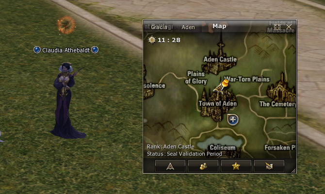
Aquí terminamos la tercera parte, nos recompensará con experiencia. Para continuar la quest, hablamos de nuevo con Claudia.
4 - Seven Signs, Secret Ritual of the Priests
Al pedir nuevamente la quest nos enviará a gludio, en frente de la iglesia, a hablar con Capitan John.
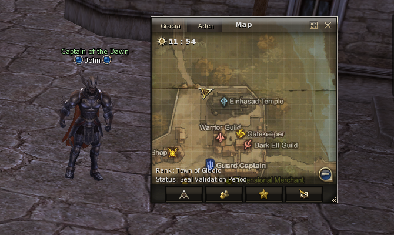
Él nos enviará a hablar con el High Priest Raymond, ahí mismo dentro de la iglesia de Gludio.
⚠️ Desde este punto, a armarse de paciencia, lo que viene puede frustrar a los mejores.
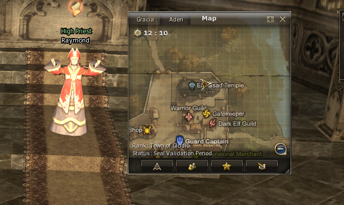
Nos transformará en guardia y nos dará un código para hacer una instancia.
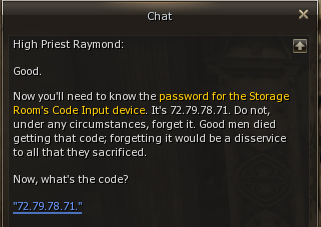
Aquí iniciamos el laberinto. El objetivo es pasar sin ser visto por los guardias, tenemos una habilidad que nos reduce la velocidad y hace que nos detecten menos los guardias, es obligatorio para los guardias con vestido (robe) pero no hace falta para los guardias con armadura (heavy).
*Si nos detectan los guardias, volveremos al último check point.
*Si por casualidad es imposible pasar por un grupo de guardias, es posible dejarse ver a propósito para acomodar los guardias a gusto hasta poder pasar tranquilamente.
*La detección de los guardias depende del servidor y el ping, así que preparense para odiar esta quest.
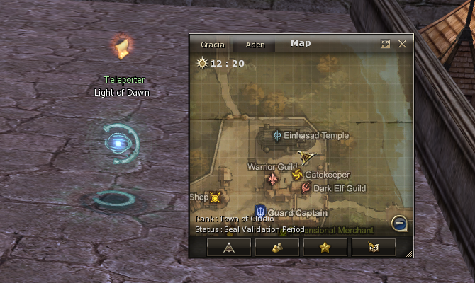
Cuando terminemos el dungeon, vamos a hablar de nuevo con Raymond.
Él nos enviará a Heine, a hablar con Iason Heine, en el warehouse.
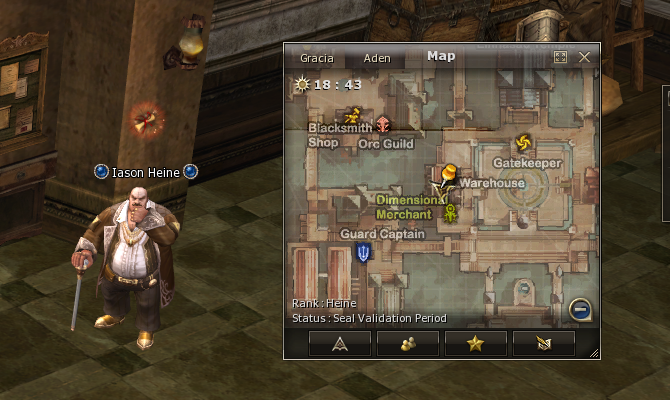
Aquí terminamos la cuarta parte, nos recompensará con experiencia. Para continuar la quest, hablamos de nuevo con Iason Heine.
5 - Seven Signs, Seal of the Emperor
Al hablar con Isaon, nos summoneara al merchant of mammon al lado para hablarle.
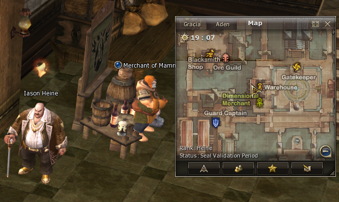
Hablamos de nuevo con Isaon y nos enviará a Disciple's necropolis.
Ahora nos adentraremos a la última instancia de esta primera parte, donde nos darán una espada con un skill especial para matar Npcs, tenemos que ir sala por sala limpiando todos los bichos y usando los distintos objetos para abrir las puertas.
*Recomiendo tener cuidado que aunque no se note, los bichos pegan bastante, ir con algo para curarse.
*Los npc tienen MUCHA vida, no intenten matarlos a mano que van a tardar toda una vida.
*En la parte de Anakin y lilith tendremos que matar los 4 pilares, cada uno nos va a dar un ítem, cuando tengamos los 4, los raids van a desaparecer, salimos de la sala y en la brevedad seremos teletransportados al inicio del dungeon.
*⚠️Si mueres en cualquier parte de la instancia, tendrás que volver a entrar y matar todos los bichos de nuevo, ante cualquier bug, cancelar la quest y volver a pedirla en heine.
Después de la instancia, volvemos a Heine a hablar con Iason.
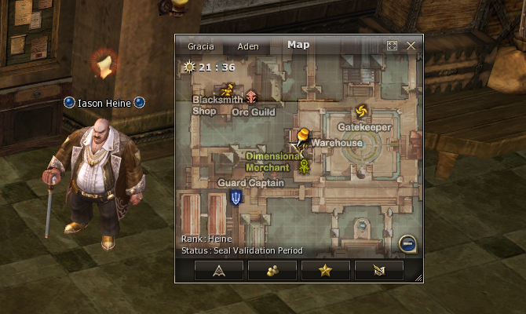
Nos enviará a hablar con Priest Wood en Aden para completar una de las últimas partes de la quest.
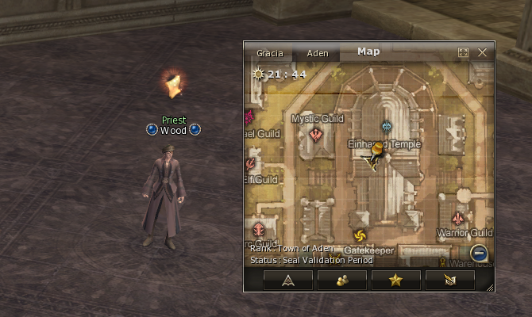
Aquí terminamos la quinta parte, nos recompensará con experiencia. Para continuar la quest, hablamos de nuevo con Iason Heine.
6 - Seven Signs, the Secret Book of Seal
Después de hablar con Wood para iniciar la quest, nos enviará a hablar con High Priest Orven, que se encuentra en la misma iglesia.
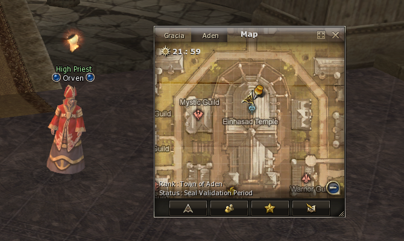
Nos enviará a Goddard a hablar con Leopard, al lado de la GK.
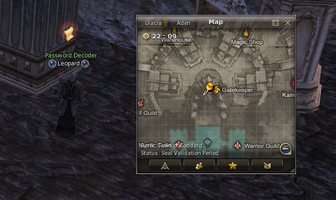
Él nos enviará afuera de la ciudad a hablar con Lawrence, nuevamente saldrá otro NPC para matar y tendremos que hablar con él nuevamente.
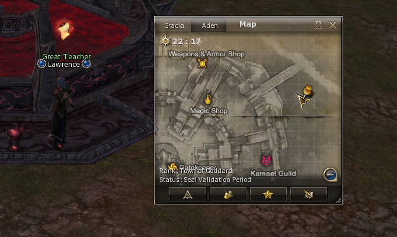
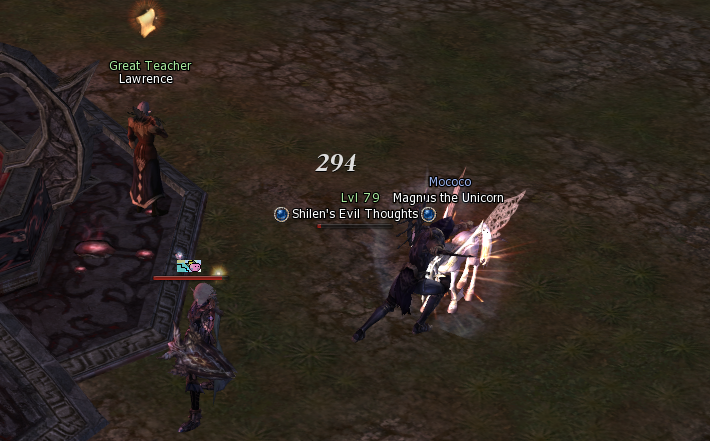
Nos enviará a Rune, a la magic guild que se encuentra en el piso de abajo, a hablar con Sophia.
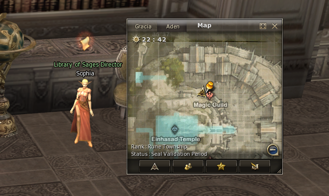
Nos enviará nuevamente a la iglesia de Aden, con el Priest Wood.
Aquí terminamos la sexta parte, nos recompensará con experiencia. Para continuar la quest, hablamos de nuevo con Wood.
Al hablar con Wood, nos teletransporta a una sala secreta, donde hablaremos con Franz.
⚠️Cuidado que en esta parte tendremos que pelear.
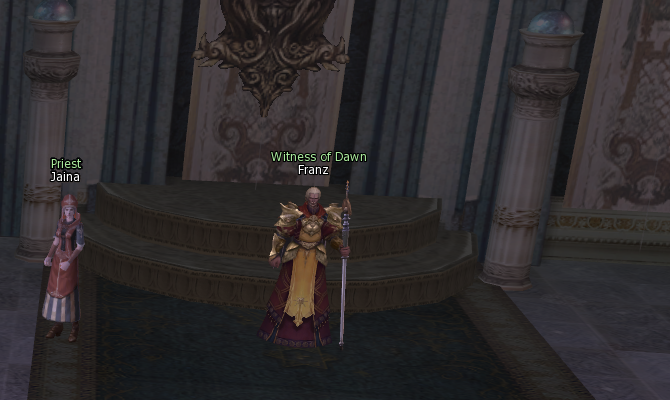
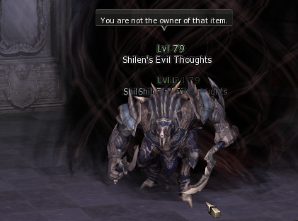
Cuando terminemos de pelear, habrá una mini animación, hablamos con Franz y con Jaina para que nos saque de la sala.
¡Felicitaciones!
Al salir, hablamos nuevamente con el priest Wood, que nos recompensará con mucha experiencia, la Ancient Adena y el cinturón que nos incrementará la capacidad de peso.
La segunda parte de estas dos cadenas de quest de Seven Signs se inicia en el Priest Wood.